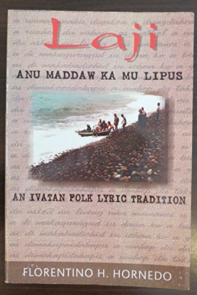
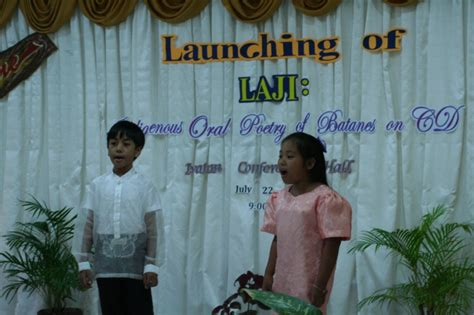
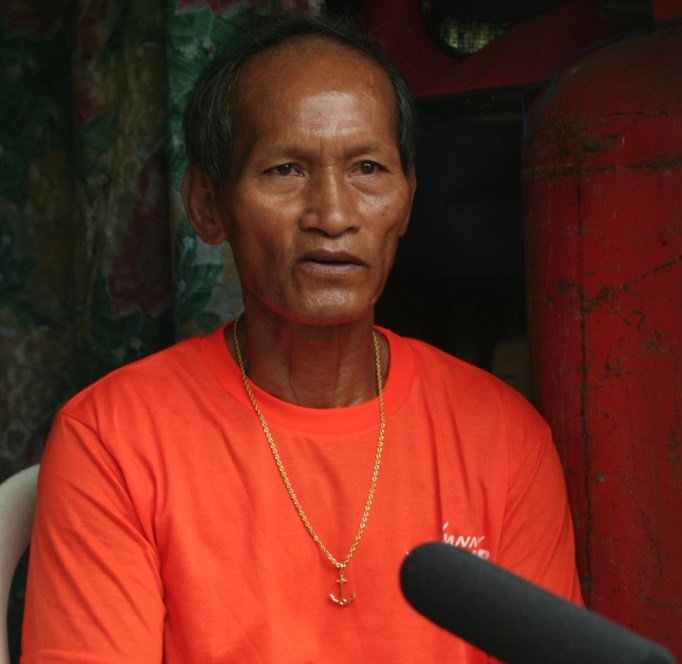
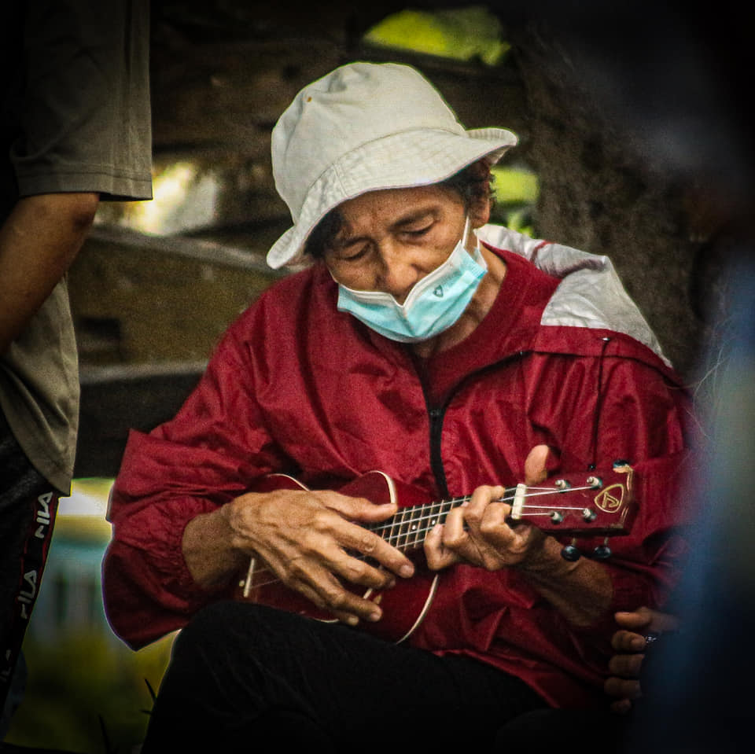
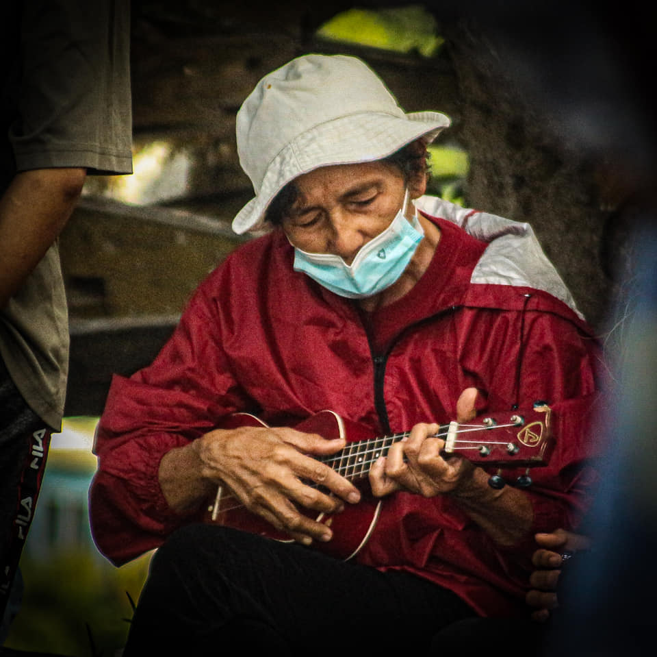

Oral Traditions & Intangible Heritage
The Ivatan culture boasts a vibrant oral tradition, including the following:
-
Laji
Unaccompanied lyrical songs performed during significant events and festivals.
 
-
Kalusan
Work songs sung collectively, often led by a soloist (vachi), to coordinate communal labor.

-
Kabbata
Legends and folklore passed down through generations.
 

These oral traditions are integral to the Ivatan community’s identity and are recognized in the Philippine Inventory of Intangible Cultural Heritage.